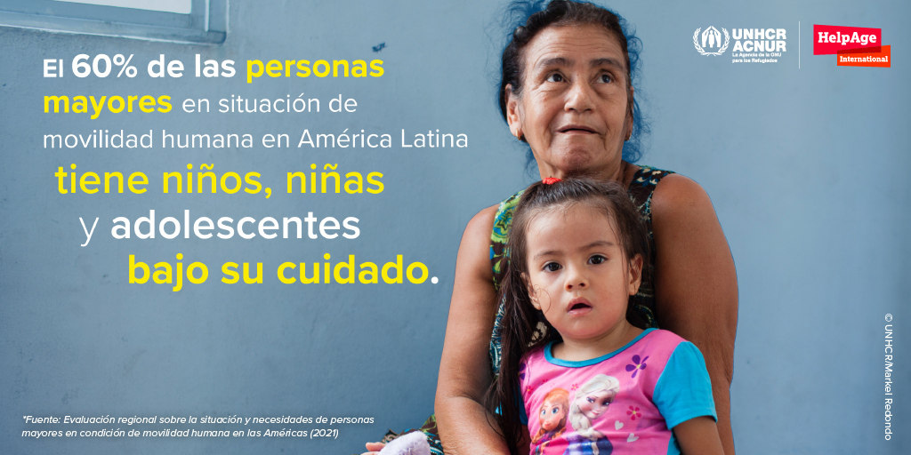
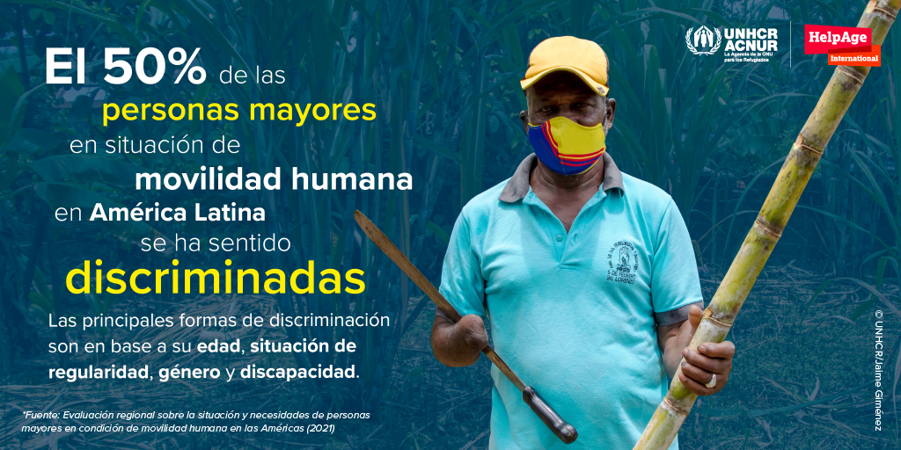

Introduccin
Es muy poca la informacin que hay sobre las personas mayores en situacin de movilidad humana en la regin Latinoamericana. Esta es la primera evaluacin regional que hace un anlisis a profundidad sobre la interseccionalidad entre vejez y movilidad humana. La situacin actual de la pandemia por la COVID-19 tambin es analizada, incluyendo el empeoramiento del acceso a derechos y servicios y el impacto en sus vidas.
La evaluacin se concentra en cinco pases de la regin: El Salvador, Honduras, Colombia, Ecuador y Per. Diferentes datos son proporcionados en Amrica Central y en la regin Andina, destacando las situaciones que enfrentan las personas mayores en movilidad humana en estos dos contextos diferentes.
El Salvador y Honduras estn caracterizados principalmente por desplazamientos internos como resultado de la violencia de grupos armados o maras, retornos y dificultades socioeconmicas causadas por la pandemia. Mientras que Colombia, Ecuador y Per estn caracterizados por movimientos mixtos (personas refugiadas y migrantes) como resultado de la crisis poltica, de derechos humanos y socioeconmica actual en Venezuela, lo que ha llevado a un xodo de millones de personas.
A pesar de que ambos contextos presentan dificultades diferentes, las personas mayores en situacin de movilidad humana se enfrentan a limitaciones similares para acceder a derechos y servicios.
Con este reporte, HelpAge y ACNUR buscan dar luz a las dificultades y riesgos enfrentados por las personas mayores en situacin de movilidad humana para que se tomen acciones que aseguren no sean las grandes olvidadas.
Llamado a la accin
Se hace un llamado a la comunidad internacional para incluir a las personas mayores en situacin de movilidad humana como un grupo prioritario en todas sus agendas, adaptando y financiando la estructura institucional que responda a sus necesidades. Esto se debe traducir en respuestas y programas humanitarios que incluyan a las personas mayores en situacin de movilidad humana como beneficiarias directas s, que garanticen su dignidad, autonoma, independencia y participacin, evitando intervenciones que las expongan a situaciones de dependencia, abuso y discriminacin.
Las personas mayores desplazadas forzosamente se han encontrado durante mucho tiempo con una proteccin insuficiente y con negligencia. Su inclusin completa en las respuestas nacionales a la pandemia es clave para salvaguardar su dignidad y derechos.
A parte de incrementar el apoyo humanitario, las personas mayores en situacin de movilidad humana necesitan mayores oportunidades de medios de vida para ser financieramente independientes.
Es necesario implementar mecanismos de participacin, consulta y retroalimentacin para el diseo, planeacin e implementacin de las respuestas humanitarias, de esta manera, las voces de las personas mayores en situacin de movilidad humana son escuchadas y sus experiencias y resiliencia son reconocidas como valores agregados a estas respuestas.
A nivel global, se hace un llamado a los Estados para que impulsen el proyecto de redactar y adoptar una Convencin Internacional de Naciones Unidas para la Proteccin de las Personas Mayores, liderado por el Grupo de Trabajo de Composicin Abierta. A nivel regional, es importante que los Estados adhieran e implementen la Convencin Inter-amercana para la Proteccin de los Derechos de las Personas Mayores, como marco legal vigente para todos los Estados americanos, adecuando sus ordenamientos internos a la luz de este instrumento y de otros marcos de proteccin pertinentes del Derecho Internacional y Regional de los Derechos Humanos.
Cules son los riesgos de proteccin y desafos que enfrentan las personas mayores en situacin de movilidad humana en las Amricas?
Vivir sin documentacin, ni informacin por meses
Las personas mayores consultadas mencionaron no poder completar los trmites de regularizacin y gestionar sus documentos, ya sea por estar solas (11% de todas las personas viven solas) o por un tema de distancia o acceso (67% de la poblacin mayor indica que tiene dificultades de acceso y movilidad en el transporte pblico).
Las personas mayores en la regin Andina son las ms afectadas por la falta de documentacin: 24% de todos las entrevistadas no contaban con documentacin. Esta cifra aumenta entre personas con discapacidad, lo que incrementa su vulnerabilidad. Tambin se encuentra una diferencia de gnero: 27% de las mujeres no contaban con documentacin en lo absoluto, comparado con el 19% de hombres. En esta regin, a pesar de que el porcentaje de aquellas en necesidad de proteccin internacional es alto, el porcentaje de personas reconocidas con la condicin de refugiado es bajo, representando solo el 9% de la entrevistadas. Muchas personas venezolanas, por distintas razones, optan por otros tipos de regularizacin en los pases de acogida.
Nosotros solicitamos la cita de refugio y la dieron para el 2022. Mujer (67) en Per, 2020
Muchas tienen acceso limitado a servicios de salud
42% de las personas encuestadas no estn recibiendo tratamiento para diferentes condiciones medicas, ya sea por citas perdidas, falta de documentacin, falta de dinero para pagar las medicinas o miedo a acercarse a los centros de salud por riesgo de contagio. Dificultades de movilidad o largas distancias a los centros de salud son razones muy poco utilizadas.
Ms de un quinto de aquellos que usaban servicios de salud han tenido que pagar, lo que, dado la severa condicin financiera de la mayora de las personas mayores en condicin de movilidad humana, gravemente limita su habilidad para acceder a los servicios que necesitan.
La mayora de las personas mayores consultadas reportaron tener acceso limitado a servicios de salud durante la pandemia. Cuarenta y dos por ciento no estaban recibiendo tratamiento para condiciones de salud previas y 6% de aquellos infectados con la COVID-19 reportaron no recibir tratamiento mdico adecuado.
Casi 27% de las personas entrevistadas reportaron no tener acceso a ningn servicio de salud y 98% report tener al menos una condicin de salud o discapacidad.
Prdidas de trabajo y falta de ingresos
Refugiados mayores han sido privados de su autonoma financiera y muchos han perdido sus trabajos y fuentes de ingreso y se han vuelto dependientes en ayuda humanitaria mayormente inexistente.
Un 64% de las personas mayores en situacin de movilidad humana no tenan ingresos mensuales antes de la pandemia. De quienes tenan ingresos, el 62% senta que no era suficiente para cubrir sus necesidades.
A pesar de su incrementada vulnerabilidad, las personas mayores en situacin de movilidad humana se han convertido en cabezas de hogar a medida que continuaban teniendo familiares en su cuidado, incluyendo nios, nias y adolescentes (60%), adultos (38%), personas mayores de 60 aos (20%) y personas con discapacidad (5%).

Un cuarto de las personas mayores consultadas no estn comiendo tres comidas al da
El acceso a alimentos para las personas mayores en situacin de movilidad humana ha empeorado en todos los pases evaluados. Antes de la pandemia, una de cada cuatro se saltaban comidas. Con el advenimiento de la COVID-19, 41% disminuy su consumo de comida.
Hasta para aquellas que comen suficientes comidas al da, esto no implica que disfruten de un balance nutricional adecuado, ya que en muchos casos el consumo alimentario se compone de carbohidratos, especialmente en reas rurales de Honduras y El Salvador, con poca protena o sin ingredientes adecuados para las dietas de personas mayores.
El acceso a comida para personas mayores proviene principalmente del apoyo familiar, pero en muchos casos tambin de vecinos y amigos.
Hay das que a penas desayunamos, hacemos una sola comidita al da Agapito
Condiciones de vivienda inadecuadas afectan sus vidas
En promedio, 61% de las personas mayores consultadas viven en espacios alquilados y solo 20% tiene su propio apartamento o casa. Parecera que las mujeres tienen menos seguridad habitacional que los hombres. Un 66% de las mujeres viven en espacios alquilados, casi 10 puntos ms arriba que los hombres y solo 17% viven en su propio hogar, comparado con el 24% de los hombres.
En Honduras y El Salvador, 44% de las personas viven en su propio apartamento o casa, un claro contraste con los pases de la regin Andina donde solo 9% viven en su propio apartamento o casa. En Honduras y El Salvador, el nmero promedio de personas viviendo en espacios alquilados (32%) es mucho menor que en la regin Andina (79%).
Un tercio de la poblacin entrevistada habita en un cuarto individual y la mitad de la poblacin comparte con una o dos personas. El hacinamiento es un tema de preocupacin en la poblacin desplazada interna en Honduras, que alcanza un tercio de la poblacin y las personas refugiadas o solicitantes de la condicin de refugiado en Colombia, que supera la mitad de la poblacin. Estas cifras son similares a aquellas para refugiadas o solicitantes de la condicin de refugiado en Per
Acceso limitado a apoyo humanitario
Menos de la mitad de las personas mayores consultadas reportaron recibir ayuda humanitaria (36% en Honduras y El Salvador y 49% en la regin Andina).
En todos los pases, la ayuda principalmente involucra alimentos y artculos de aseo, con 48% en Honduras y El Salvador y 52% en los pases Andinos. En segundo lugar, resaltan los subsidios, apoyo econmico o transferencias monetarias, con 35% en Honduras y El Salvador y 45% en la regin Andina.
Las personas mayores quieren independencia y autonoma
Discriminados por su edad
La mitad de las personas entrevistadas mencionaron haber experimentado discriminacin, mientras que un nmero preocupante describi incidentes de abuso. Ms de un tercio de las personas encuestadas reportaron haber sido abusadas en los pases donde residen y antes de la pandemia, con una fuerte diferencia entre aquellas con (48%) y sin (29%) discapacidad.
En la regin Andina, el maltrato es ms bajo, afectando a un cuarto de la poblacin (26%), y existe una diferencia de gnero del 34% para mujeres comparado con el 20% para hombres.
El tipo de abuso ms recurrente contra las personas mayores con discapacidad en los pases de la regin andina es el desalojo (8%), afectando a ms mujeres que a los hombres por una diferencia de tres por ciento.
Entre los autores del abuso, 11% eran familiares, 7% oficiales del gobierno, incluyendo fuerzas de seguridad, 7% eran amistades o vecinos/as y el 74% eras otras personas, por ejemplo, actores armados, pandillas, personas en la calle, en el transporte pblico o los dueos de los espacios de alquiler o donde viven.

Participacin activa en sus comunidades
El empoderamiento de las personas mayores est relacionado a factores como la participacin, accesibilidad fsica, la habilidad de moverse de un lugar a otro, as como a tener canales de comunicacin a su disposicin que puedan generar autonoma e independencia.
Ms de dos tercios de las personas mayores en situacin de movilidad humana no tenan actividades para compartir o socializar con otros.
Las mujeres presentaron un porcentaje de no participacin mayor al de los hombres. Esta participacin es an ms baja cuando se incluyen personas mayores con discapacidad. Adicionalmente, alrededor del 84% de las personas mayores no ha participado de charlas o entrenamientos en actividades que concienticen sobre sus derechos.
A pesar de que antes de la COVID-19 las personas mayores no participaban activamente, durante la pandemia su participacin ha disminuido drsticamente debido a las medidas de confinamiento, que han causado problemas de salud fsica y mental.
Usando el canal de comunicacin adecuado
El equipo y acceso al Internet son apoyos esenciales en el proceso de informacin, pero tambin como mecanismos de participacin en actividades virtuales o como intermediarios para facilitar el desarrollo de acciones comunitarias.
Ms del 85% de las personas mayores tienen acceso a telfonos mviles, 70% a la televisin y solo 35% a la radio. Solo el 10% tiene acceso a telfonos fijos, computadoras porttiles, dispositivos de entretenimiento, tabletas y computadoras de escritorio.
El acceso a los telfonos mviles no implica conectividad al Internet, ya que en promedio el acceso solo sobrepasa un tercio de la poblacin, excepto en Colombia y Ecuador. Adems, la mayora de sus telfonos mviles no son smartphone. Uno de sus usos principales es comunicarse con familiares a travs de WhatsApp.
STORY: Personas mayores venezolanas y colombianas se cuidan entre s bajo el mismo techo
Nace el 3 de octubre de 1989, en Riohacha, La Guajira, al norte de Colombia, como un proyecto de vida de una trabajadora social y su ncleo familiar, con la idea de apoyar y ayudar a las personas mayores en esta zona del pas. Son 33 aos al servicio de quienes lo necesitan: personas que han sido abandonas por familiares y que all son acogidas. Esta es una labor de carcter comunitario.
Inicialmente, la fundacin Casa del Abuelo se consideraba como un espacio de recreacin y entretenimiento para personas mayores de paso. Pero con el tiempo y las necesidades extremas del territorio, se fue trasformando hacia la prestacin de ayuda las 24 horas del da y los 7 das de la semana.
La Casa del Abuelo acoge a personas adultas mayores colombianas que quedaron solas. Ahora ha aumentado su capacidad para albergar tambin a personas venezolanas. Estbamos presenciando un repentino flujo masivo de personas venezolanas, familias viviendo en las calles con sus hijos y suplicando por un techo, una sopa o unos pesos, explic Mara Pea de Melo, la directora del centro. Decidimos que tenamos que hacer algo por ellos tambin.
Han cambiado muchas cosas desde que empezamos a albergar a las familias venezolanas y a sus hijos, aadi Mara. Los abuelos y las abuelas los ven como miembros de la familia. Se sienten ms protegidos, debido a que hacen algunas actividades juntos durante el da. Eso fortalece mucho la confianza de los abuelitos.
COVID-19 ha afectado los medios de vida, salud mental y condiciones fsicas de las personas mayores
La pandemia ha exacerbado las amenazas ya existentes a la salud fsica y mental, la nutricin, autonoma financiera y estatus legal de personas refugiadas mayores y otras en situacin de movilidad humana.
La pandemia de la COVID-19 est impactado gravemente el bienestar de las personas mayores desplazadas en toda Amrica Latina, limitando an ms su acceso a derechos y servicios.

La evidencia indica que las personas con discapacidad se enfrentan a dificultares y limitaciones accediendo a servicios de salud por sntomas y enfermedades diferentes a la pandemia.
Esta limitacin es an ms grande en personas con discapacidad. Adicionalmente, 6% de aquellas infectados por la COVID-19 reportaron no recibir atencin mdica adecuada.
El acceso a alimentos para las personas mayores en situacin de movilidad humana ha empeorado en todos los pases evaluados. Antes de la pandemia, una de cada cuatro se saltaban comidas. Con el adviento de COVID-19, 41% disminuy su consumo de comida.
Un 64% de las personas consultadas no tenan ingresos mensuales antes de la pandemia. De aquellos que si tenan ingresos, 62% sentan que no era suficiente para cubrir sus necesidades bsicas. Pero COVID-19 agrav an ms su situacin econmica, dejando a muchos sin empleo. En Honduras y El Salvador, un tercio de las personas entrevistadas reportaron haber perdido sus trabajos. En los pases de la regin Andina, casi la mitad perdi sus trabajos.
Entretanto, las condiciones de vivienda tambin empeoraron para un quinto de las personas entrevistadas, ya que estos no eran capaces de pagar la renta. Cinco por ciento de las encuestadas han sido desalojadas durante la pandemia
Los efectos psicolgicos de la pandemia son unos de los problemas ms grandes identificados, relativo a la depresin, ansiedad y el miedo constante al contagio o la muerte. Las enfermedades y problemas emocionales se han intensificado, especialmente en las personas mayores vctimas del desplazamiento interno y las deportaciones.
El aislamiento es uno de los efectos ms importantes de la COVID-19, ya que las personas no pueden encontrarse con sus amistades y familia como normalmente lo haran y su tiempo de recreacin tambin es reducido. La pandemia ha llevado a la disminucin del contacto diario de las personas mayores en situacin de movilidad humana con sus familias, de un 39% a 26%, lo que ha tenido un impacto en los sentimientos de aislamiento y soledad. El aislamiento agrava las condiciones fsicas y mentales.
Conclusiones
El estudio revela una serie de vulnerabilidades especficas para personas mayores en situacin de movilidad humana que necesitan ser incorporadas en el diseo de las respuestas humanitarias:
La irregularidad o falta de acceso a los espacios de asilo pueden conllevar una serie de riesgos y dificultades en el goce de derechos de las personas mayores en situacin de movilidad humana. Esto fue reflejado en los resultados que fueron analizados en temas de salud, vivienda, seguridad y otros derechos. Las dificultades principales para obtener documentacin son, por un lado, el alto grado de desinformacin sobre procedimientos administrativos necesarios para permanecer de manera regular en los pases y, por otro, la ausencia de un enfoque prioritario en la gestin de los documentos por parte de las autoridades respectivas.
Las personas mayores tienen una serie de problemas de salud que tienden a recibir poca atencin. Despus de la hipertensin, que es lo ms esperado, la salud mental es la segunda condicin ms prevalente y est vinculada directamente a la movilidad humana en todos los pases.
La gran mayora de las personas mayores en situacin de movilidad humana encuestadas viven en una situacin de gran vulnerabilidad econmica, ya que las pensiones son pocas o no se reciben y el acceso al trabajo es limitado por las condiciones de los mercados laborales, por la falta documentacin y por la discriminacin principalmente debido a la edad y situacin de movilidad. Todo esto lleva a la informalidad en situaciones de precariedad y explotacin laboral, con largas jornadas y bajos ingresos, as como situaciones denigrantes y peligrosas. Las condiciones de precariedad se agudizan en las zonas rurales, especialmente en los grupos de personas que se pueden ver enfrentadas a desplazamientos forzados.
Existe un sector de la poblacin mayor que no est recibiendo la alimentacin suficiente, ya que ms de un quinto no cuenta con las tres comidas al da, sumado a la disminucin del consumo de comidas producto de la pandemia. La alimentacin de las personas mayores no est nutricionalmente balanceada y la orientacin y los recursos sobre cmo mejorar estas dietas, controlar el sobrepeso y prevenir enfermedades crnicas no son adecuadamente proporcionados.
La poblacin mayor en movilidad humana presenta una baja seguridad en el derecho a la vivienda. Se presentan casos de hacinamiento en Honduras, Colombia y Per. El desalojo es otro de los riesgos graves para las personas mayores y se presenta como una forma de maltrato hacia esta poblacin y sus familias.
El maltrato psicolgico est vinculado con la inseguridad y la violencia ya que las personas mayores son ms vulnerables que el resto de la poblacin. Las mujeres sufren porcentajes ms altos de abuso psicolgico en muchos casos y es necesario considerar las diferencias de gnero cuando se habla de las formas de maltrato. Las personas en trnsito pueden verse afectadas a riesgos muy altos por la extrema vulnerabilidad que implica en ocasiones atravesar por pasos irregulares.